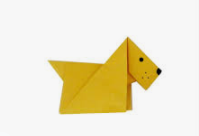

Origami Designs
In 1000 AD origami was only practised by elites.
Before it was known as origami in japenese it was meant as folding paper.
Where was origami found
Many studies assert that origami was invented by the Japanese about a thousand years ago, but its roots may well be in China.
About Us
Follow Us
These are one of our origami creations
Around the age of 2-4 years, swans choose a mate which they will generally remain with for the rest of their lives. In some cases, however, they will choose a new mate if their partner dies or if they are unsuccessful at breeding.

A dog's' only sweat glands are between their paw pads.
If never spayed or neutered, a female dog, her mate, and their puppies could produce over 66,000 dogs in 6 years!